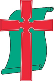

전남광주통합특별시 무안군 청계면 백련동1길 17-4
010 3501 8542 | https://ekodichurch.kr
010 3501 8542 | https://ekodichurch.kr

에 코 디 교 회창립 24.02.03.(03) | 2026.11.22 · 주일예배This Week’s Scripture for Meditation and Sharing · 11/22–11/28
| 일 11/22 | 월 11/23 | 화 11/24 | 수 11/25 | 목 11/26 | 금 11/27 | 토 11/28 |
|---|---|---|---|---|---|---|
| 고전12:1-11 | 고전12:12-26 | 고전12:27-13:3 | 고전13:4-13 | 고전14:1-12 | 고전14:13-25 | 고전14:26-40 |
Community Announce
- 새로 나오신 분과 오랜만에 나오신 분을 주님의 이름으로 환영합니다.
- 매주 화요일 오전 10시, 평공목(평생공부하는목회자) 모임이 있습니다.
- 매주 토요일 오전 11시, 에코디 토요모임을 위해 기도와 협력을 위해 기도해주세요.
- 오늘 11월 22일은 추수감사주일(성령강림절 후 마지막 주일)입니다. 다음 주일(11/29)부터 대림절이 시작됩니다
- 성령께서 각 사람에게 주신 은사는 공동의 유익을 위한 것입니다.
- 한 해 동안 받은 은혜를 기억하며 감사 제목을 한 가지씩 나누어 주세요.
Community Confession
하나님은 우리를 세상에서 하나님의 구별된 백성으로 부르셨습니다.
(갈 4:4-7, 롬 8:14-17, 벧전 2:9, 히 10:24-25)
하나님은 우리를 복음으로 서로 환대하며 나누는 공동체로 세우셨습니다.
(창 1:27, 31, 행 2:42-47, 롬 12:13)
하나님은 우리를 세상에서 자기비움과 자기부정으로 자유롭고 거룩하게 하십니다.
(행 1:8, 롬 8:28, 벧전 2:11-12, 렘 29:4-7, 빌 2:5-8, 눅 9:23)
Those who serve
| 구분 | 이름 | 구분 | 이름 |
|---|---|---|---|
| 대표 | 정찬균목사 | 찬양 | 박은희권사 |
| 협동 | 오원옥목사 | 연주 | 정성, 정결 |
Recent statistics
전주 기록 · 최신 인원 재확인 필요